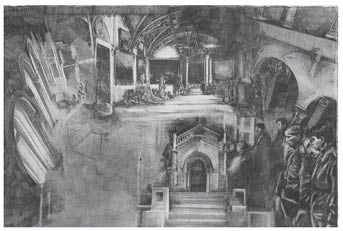

I
Adliye sarayında Melvinski davasına bakan yargıçlar ile savcı duruşmaya ara vererek İvan Yegoroviç Şabak’ın odasında toplandılar. Konuşma döndü dolaştı ünlü Krasov davasına geldi. Fyodor Vasilyeviç, dosyanın kovuşturmaya gerek olmadığı kararıyla kapatılmasını şiddetle savunurken, İvan Yegoroviç kendi görüşünde direniyordu. Ta baştan beri tartışmaya katılmamış bulunan Pyotr İvanoviç ise, eline az önce aldığı resmi adliye gazetesini gözden geçirmekteydi.
Birdenbire, “Baylar, İvan İlyiç ölmüş!” dedi.
“Doğru mu söylüyorsunuz?”
“İşte, okuyun!..”
Taze mürekkep kokan gazeteyi Fyodor Vasilyeviç’e uzattı.
Siyah çerçeve içinde şunlar yazılıydı: “Praskovya Fyodorovna Golovina, sevgili kocası, yargıç kurulu üyesi İvan İlyiç Golovin’in 4 Şubat 1882 günü yaşama gözlerini yummuş olduğunu tüm akraba ve dostlarına duyurur. Cenaze töreni cuma günü öğleden sonra saat birde yapılacaktır.”
İvan İlyiç, odada bulunanların meslektaşıydı. Hepsi de onu severdi. Birkaç haftadır hasta yatıyor, iyileşemeyeceği söyleniyordu. Henüz görevinden ayrılmamış olsa da, öldüğü takdirde onun yerine Alekseyev’in, Alekseyev’in yerine ise Vinnikov’un ya da Ştabel’in atanacağı söylentileri dolaşmaktaydı. Bu nedenle, İvan İlyiç’in öldüğünü öğrenir öğrenmez odadaki bayların aklına ilk gelen, bu ölümün kendilerinin ve tanıdıklarının makam değiştirmesi ya da rütbece yükselmesi bakımından ne gibi bir etkisinin olacağıydı.
Fyodor Vasilyeviç, “Artık ya Ştabel’in ya da Vinnikov’un yerini alırım. Zaten çoktandır söz veriyorlar. Daire değişikliği bir yana, yılda sekiz yüz rublelik bir ücret artışı da olacak,” diye geçiriyordu içinden.
Pyotr İvanoviç ise, “Kaynımın Kaluga’dan başka yere atanmasını sağlayabilirim artık. Karım çok sevinecek. Böylece ailesi için bir şey yapmadığımı söyleyemez,” diye düşünüyordu.
Pyotr İvanoviç bir an için düşüncelerden sıyrılarak, “Zavallının yataktan kalkamayacağını biliyordum. Yazık oldu,” dedi.
“Hastalığı neydi?”
“Doktorlar bir türlü tanı koyamadılar. Daha doğrusu her biri başka bir şey söyledi. Onu son gördüğümde düzelecekmiş gibi bir hali vardı.”
“Bayramdan beri adamcağızı göreyim dedim, nedense fırsat bulamadım.”
“Malı mülkü var mıydı bari?”
“Karısının bir şeyleri var sanıyorum, ama önemsiz.”
“Cenazesine gitsek iyi olur. Çok da uzakta oturuyorlar.”
“Sizin evden, demek istiyorsun. Sizin evden her yer uzak.”
Şabak’a gülümseyerek bakan Pyotr İvanoviç, “Nehrin öbür yakasında oturuyor olmamı bir türlü bağışlamadınız,” dedi.
Böylece kentte mahallelerin birbirine uzaklığı üstüne konuşa konuşa duruşma salonuna geçtiler.
Bu ölüm olayının zihinlerde uyandırdığı çeşitli makam değişikliği ve yeni bir göreve geçme düşünceleri bir yana, yakın bir tanıdığın ölmesi, hepsinde, her zaman olduğu gibi, “İyi ki ölen ben değilim de o” yollu sevinç dolu bir duygu uyandırmıştı.
Her biri, “Gördün mü, adam ölüp gitti! Ama ben yaşıyorum,” diye düşünüyor ya da hissediyordu. Bu arada, İvan İlyiç’in dostları diyebileceğimiz yakın arkadaşları, zorunlu ve sıkıntılı bir nezaket borcunu yerine getirmek için de olsa, cenaze törenine katılmak, ölenin dul karısına başsağlığına gitmek gerektiğini anımsadılar.
İvan İlyiç’in en yakın dostları Fyodor Vasilyeviç ile Pyotr İvanoviç’ti.
Pyotr İvanoviç, Hukuk Okulu’ndan1 beri İvan İlyiç’in arkadaşıydı, kendini ona karşı her bakımdan borçlu sayıyordu.
Öğle yemeğinde karısına İvan İlyiç’in öldüğünü, artık kardeşini kendi eyaletlerine aldırabileceğini söyledikten sonra, dinlenmek için uzanmak yerine frakını giydi, İvan İlyiç’in evine yollandı.
İvan İlyiç’in evinin önünde bir kupa arabası ile iki fayton duruyordu. Evin girişinde, vestiyerde, üstü simle, sırmayla işlemeli, püsküllü bir tabut kapağı duvara yaslanmıştı. Siyahlar giyinmiş iki kadın kürklerini çıkarıyordu. Bunlardan biri İvan İlyiç’in kız kardeşiydi, öteki ise tanımadığı bir kadın. Pyotr İvanoviç’in arkadaşı Schwarz o sırada merdivenlerden aşağı inmekteydi. Yukarıdan Pyotr İvanoviç’i görür görmez durdu, “İvan İlyiç aptalca bir iş yaptı, biz onun gibi enayilik eder miyiz?” dercesine göz kırptı ona.
İngiliz usulü favorilerinin çevrelediği yüzü ve frakının içindeki sırım gibi ince bedeniyle Schwarz’ın çıtkırıldım bir kibarlığı vardı. Uçarı tavırlarına uymayan bu kibarlığın burada özellikle dikkat çektiğini düşündü Pyotr İvanoviç.
Pyotr İvanoviç kadınların öne geçmesine izin vererek arkalarından merdiveni çıktı. Schwarz yukarıda durmuş onu bekliyordu. Pyotr İvanoviç onun niçin durduğunu anladı, herhalde o akşam vint2 oynayacakları yeri söyleyecekti. Kadınlar, İvan İlyiç’in dul karısının yanına gittiler; yüzüne ciddi bir ifade takınmaya çalışarak dudaklarını ısıran Schwarz ise, gözlerinde oynak bir parıltı, kaş göz hareketiyle Pyotr İvanoviç’e ölünün konulduğu odayı gösterdi.
Pyotr İvanoviç, böyle durumlarda sıklıkla olduğu gibi, ölünün yanında ne yapacağını kestiremeden odaya girdi. Aklına gelen ilk şey istavroz çıkarmanın bir sakıncasının olmadığıydı. İstavroz çıkarırken aynı zamanda öne eğilmek gerekip gerekmediğini bilmediği için orta yolu seçti: Odaya girerken eliyle istavroz çıkarmaya, bir yandan da eğilir gibi yapmaya başladı. El ve baş hareketlerinin izin verdiği ölçüde odayı gözden geçirmeye çalıştı. Merhumun yeğeni olabilecek, biri kolejli iki delikanlı, istavroz çıkararak dışarı doğru yürüyorlardı. Put gibi kımıldamadan duran yaşlı bir kadın vardı köşede. Kaşlarını garip bir biçimde havaya kaldırmış başka bir kadın ise onun kulağına bir şeyler fısıldıyordu. İri yapılı, uzun redingotlu genç bir papaz, yüzünde, “Dünya bana vız gelir!” diyen bir ifadeyle bağıra bağıra dua okuyordu. Evin mutfak işlerine bakan uşak Gerasim, yerlere bir şeyler serperek Pyotr İvanoviç’in önünden sessizce geçti. Pyotr İvanoviç bunu görünce, bozulmaya başlayan cesedin hafif kokusunu hissetti. Son ziyareti sırasında, köy kökenli bu uşağı, İvan İlyiç’in odasında hastabakıcı olarak görmüştü; İvan İlyiç uşağını çok severdi. Pyotr İvanoviç istavroz üstüne istavroz çıkarıyor; tabut, papaz ve köşedeki masanın üstüne konulmuş aziz tasvirlerine doğru hafifçe öne eğiliyordu. Eliyle istavroz çıkarma işinin bir hayli uzadığını anlar anlamaz biraz durakladı, ölüye bakmaya başladı.
Bütün ölüler gibi, katılaşan organlarının olanca ağırlığıyla, içi bezle kaplı tabuta yatırılan ölünün başı bir daha kalkmamacasına yastığa gömülmüştü. Bütün ölüler gibi, çökük şakaklarının üstündeki saçları dökülmüş, balmumu sarısı alnı daha da tümsekleşmişti; burnu ise üstdudağının üzerinde güçlükle duruyor gibiydi. Pyotr İvanoviç’in son gördüğü günden beri İvan İlyiç çok değişmiş, daha da zayıflamıştı; ama yüzü bütün ölülerinki gibi, canlı olduğu zamankinden daha güzel, en önemlisi daha görkemli bir görünüşe bürünmüştü. Bu yüzde, yapılması gereken şeyi doğruluğuna inanarak yapanların kendinden emin ifadesi vardı. Yüzün duruşunda, ayrıca, yaşayanlara bir sitem, bir anımsatma isteği okunuyordu. İvan İlyiç’in yüzünde okunan bu anımsatma isteği Pyotr İvanoviç’e yersiz, en azından onunla ilgili değilmiş gibi geldi. Birden içinde tatsız bir duygu kabardı; davranışının nezaket kurallarına uymadığını bile bile, ivedi bir hareketle bir kez daha istavroz çıkararak geriye döndü, kapıya doğru yöneldi.

Bütün ölüler gibi, katılaşan organlarının olanca ağırlığıyla,
içi bezle kaplı tabuta yatırılan ölünün başı bir daha
kalkmamacasına yastığa gömülmüştü.
Schwarz onu evin girişinde beklemekteydi; ayaklarını genişçe iki yana açmış, elleri arkasında, silindir şapkasıyla oynuyordu. Schwarz’ın, şık giyimi içinde tertemiz, hoppa görünüşü Pyotr İvanoviç’i biraz canlandırdı. Arkadaşının böyle sersemletici duygulara pabuç bırakacak türden olmadığını hemen anladı. Onun yalnız bu duruşu bile, İvan İlyiç’in cenaze töreninin, onların düzenli oturumlarını bir kerecik bile olsa dağıtmaya yetecek bir neden olmayacağını gösteriyordu. Yani toplanacakları evdeki uşak şamdana yepyeni dört mum koyarken, bir deste kâğıt açıp bu akşam da oyuna oturmalarını hiçbir şey engelleyemezdi. Zaten böyle bir olayın hoş bir akşam geçirmelerine engel olacağını düşünmek bile yersizdi. Pyotr İvanoviç önünden geçerken Schwarz ona, Fyodor Vasilyeviç’in evindeki vint partisine katılmasını fısıltıyla söyleme fırsatını kaçırmadı. Ne yazık ki o günkü oyuna katılmak Pyotr İvanoviç’e kısmet olmayacaktı.
Bütün çabalarına karşın bedeninin belden aşağı genişlemesini önleyemeyerek şişmanlamış, şimdi de siyah bir tülle örttüğü başına kadar karalara bürünmüş olan, İvan İlyiç’in orta boylu dul karısı Praskovya Fyodorovna, kaşları tabutun önünde duran kadınınki gibi tuhaf bir biçimde havaya kalkık, diğer hanımlarla birlikte ölünün odasına yürürken, “Tören hemen başlayacak, içeri buyurun,” dedi.
Schwarz, kadının önerisini kabul edip etmediğini belli etmeyen bir hareketle eğilerek durakladı. Praskovya Fyodorovna, Pyotr İvanoviç’i tanıyınca içini çekti, iyice yanına sokulup elini tutarak, “Biliyorum, İvan İlyiç’in gerçek dostu sizdiniz...” dedi.
Pyotr İvanoviç’ten bu sözlerine uygun bir davranış beklercesine baktı. Pyotr İvanoviç içeride istavroz çıkarmanın gerektiğini anladığı gibi, burada da iç çekmenin, kadının elini sıkmanın ve, “Bana güveniniz!” demenin kaçınılmazlığını anlamıştı. Düşündüğü gibi de yaptı. Öyle yapınca istediği sonucu elde ettiğini hissetti. Kendisi de duygulanmıştı, kadın da.
Kadın ona, “Tören başlamadan biraz çıkalım,” dedi. “Sizinle konuşacaklarım var... Kolunuzu verin bana.”
Pyotr İvanoviç kolunu uzattı, ona üzüntüyle göz kırpan Schwarz’ın önünden geçerek kadınla yan yana başka bir odaya doğru yürüdüler.
Schwarz’ın oynak bakışı, “Gördün mü, vinte gelemeyeceğin anlaşılıyor. Eh, kusura bakmayın, biz de dörde tamamlamak üzere başkasını buluruz. Yakanızı burdan kurtarır gelirseniz beşli oyuna geçeriz,” diyordu.
Pyotr İvanoviç daha bir derinden, üzgün üzgün içini çekti. Praskovya Fyodorovna şükranla kolunu sıktı. Pembe duvar kâğıtlarıyla kaplı, hüzün saçan bir lambanın yandığı konuk odasına girerek masaya oturdular. Kadın divana geçti, Pyotr İvanoviç ise yayları bozulduğu için altında bir türlü düzgün durmayan pufa ilişti. Praskovya Fyodorovna, başta ona sandalyeye oturmasını söylemek istemiş, ama bunun durumla uyuşmayacağını düşünerek vazgeçmişti. Pyotr İvanoviç pufa otururken İvan İlyiç’in bu odayı yeni baştan özene bezene düzenlediğini, yeşil yaprak desenli pembe duvar kâğıdını almadan önce bu desenin odaya yakışıp yakışmayacağını ona sorduğunu anımsadı. Konuk odası mobilyalarla, bir sürü ıvır zıvırla tıka basa doluydu. Masanın yanından geçip divana otururken kadıncağızın siyah mantosunun üstündeki siyah tül bir sandalyenin çıkıntısına takılmıştı. Pyotr İvanoviç tülü kurtarmak için doğrulayım derken altındaki puf kabararak onu yukarı itmeye başladı. Ama kadın tülünü kendisi kurtarmaya çalıştığı için Pyotr İvanoviç yerine oturarak ayaklanan pufu altında ezdi. Ama tül bir türlü kurtulmuyordu; Pyotr İvanoviç bir daha kalktı, puf gene ayaklanarak bu sefer çatırdamaya başladı. Tülü takıldığı yerden kurtarınca kadın temiz patiska bir mendil çıkardı, ağlamaya başladı.
Tülün kadının başına açtığı iş, pufla olan kavgası, Pyotr İvanoviç’in acıma duygularını bastırdığı için orada somurtup duruyordu. Onları bu güç durumdan İvan İlyiç’in uşağı Sokolov kurtardı. Sokolov, Praskovya Fyodorovna’nın mezarlıkta ayırttığı yerin iki yüz ruble tuttuğunu söylemeye gelmişti. Kadın ağlamayı keserek bir kurban çaresizliğiyle Pyotr İvanoviç’e baktı. Fransızca, durumlarının iyice güçleştiğini söyledi. Pyotr İvanoviç, “Ne yaparsınız?” gibisinden sessiz bir işaret yaptı.
Kadın cömert görünmeye çalışarak, aynı zamanda ölgün bir sesle, “Sigara buyurun,” dedi. Sonra da Sokolov’la mezar işini görüşmeyi sürdürdü.
Pyotr İvanoviç sigarasını içerken kadının önceden mezar için yer fiyatlarını inceden inceye soruşturduğunu, alınacak yerle ilgili kararını çoktan verdiğini öğrendi. Kadın, mezar işini bitirdikten sonra ilahi için koro çağrılması konusunda yapılması gerekenleri anlattı. Sokolov dışarı çıktı. Kadın, masanın üstünde duran albümleri bir kenara iterken, “Her işimi kendim görmek zorundayım,” dedi. Pyotr İvanoviç’in sigarasının külü mobilyanın üzerine düşmek üzereyken kül tablasını aceleyle konuğun önüne sürdü.
“Üzüntülüyüm diye para işleriyle uğraşamadığımı söylemek doğru olmaz. Beni avutmasa bile oyalayan tek şey, işte kocamla ilgili bu gibi işler oluyor.”
Böyle diyerek, ağlayacakmış gibi yeniden mendilini çıkardı. Ama birden kendini zorlayarak silkinip toparlandı, sakin bir sesle konuşmaya başladı: “Sizi buraya bir ricamı iletmek için çağırdım.”
Pyotr İvanoviç altında kımıldamaya başlayan yayların fazla ileri gitmesine meydan vermeden hafifçe doğrularak kadının önünde eğildi.
“Son günlerde kocam çok acı çekti.”
“Ya? Neden?”
“Hem de ne acılar! Dakikalar değil, saatlerce durmadan bağırdı. Son üç gün, bağırmalarının ardı arkası kesilmedi. Dayanılacak gibi değildi. Günlerce nasıl dayandığıma ben bile şaşıyorum. Çığlıkları üç kapı ötesinden işitiliyordu. Ah, neler çektiğimi bir bilseniz!..”
“Bilinci yerinde miydi?”
“Hem de son ânına kadar. Ölümüne çeyrek saat kala hepimizle vedalaştı, hatta Volodya’yı yanından götürmemizi bile istedi.”
Kendisinin ve karşısındaki kadının utanmadan rol yaptıklarını bilmesine karşın, önce afacan bir çocuk, sonra bir okullu, daha sonra da bir iş arkadaşı olarak çok yakından tanıdığı birinin acı çektiğini düşünmek Pyotr İvanoviç’e birden büyük bir ürperti verdi. Ölünün, burnunu üstdudağına doğru itercesine tümsekleşen alnı bir kez daha gözünün önüne gelince, kendinden korkmaya başladı.
“Üç gün süren korkunç acılar ve ölüm... Bu durum her an, hatta hemen şimdi benim de başıma gelebilir,” diye düşününce içi korkuyla doldu. Ama bunun hemen arkasından, nasıl olduğunu anlamadan, bu olayın kendisinin değil, İvan İlyiç’in başına geldiğini ve kendisinin başına gelemeyeceğini, Schwarz’ın yüzünde de görüldüğü üzere, kötü şeyler düşünerek karamsarlığa düşmenin yersizliğini aklına getirdi. Bunu düşününce rahatladı ve ölüm kendisiyle değil de yalnızca İvan İlyiç’le ilgili bir şeymiş gibi arkadaşının nasıl öldüğünü inceden inceye soruşturmaya başladı.
Kocasının çektiği gerçekten korkunç bedensel acıları bütün ayrıntılarıyla anlattıktan sonra –Pyotr İvanoviç bu acıların nasıl bir şey olduğunu en azından Praskovya Fyodorovna’nın sinirlerinin böylesine yıpranmasından anlamıştı– dul kadın asıl konuya geçmesi gerektiğini düşünerek, “Ah, Pyotr İvanoviç,” dedi. “Ne kadar zor, ah, ne kadar zor bir durumdayım, bilseniz!..” dedi, sonra da ağlamaya başladı.
Pyotr İvanoviç içini çekerek ağlamanın sonunun gelmesini bekledi. Kadın mendiliyle burnunu silince bir kez daha, “Bana güveniniz...” dedi. Bunun üzerine kadın yeniden konuşmaya başlayarak ondan istediği şeyi anlattı. Kocasının arkadaşından öğrenmek istediği, İvan İlyiç’in ölmesi üzerine dul aylığı almanın yollarıydı. Bunu Pyotr İvanoviç’ten öğrenmek istiyormuş gibi davranmakla birlikte konunun inceliklerini ondan daha iyi bildiği gözden kaçmıyordu. Kocasının ölümü üzerine hazineden ne kadar para verileceğini de biliyordu, ama onun asıl öğrenmek istediği, daha yüklüce bir dul aylığının bağlanıp bağlanamayacağıydı. Pyotr İvanoviç bir çıkar yol bulmaya çalışırcasına bir süre düşündü, sonra cimriliğinden dolayı hükümete söverek, istenilenin mümkün olamayacağını söyledi. Bunun üzerine kadın bir daha içini çekti, ziyaretçisinden kurtulmaya çalışmanın yollarını aramaya başladı. Adam bunu anladı, sigarasını söndürdü, kadının elini sıkarak antreye çıktı.
Bir duvarında İvan İlyiç’in pek beğendiği kelepir saatin asılı olduğu yemek odasına girince orada papazı, törene gelen birkaç tanıdığı ve İvan İlyiç’in yetişkin kızını gördü. Genç kız da karalara bürünmüştü, zaten ince olan beli yas giysileri içinde daha da ince görünüyordu. Somurtkan, kararlı, öfkeli bir yüzü vardı. Pyotr İvanoviç’e, bir suçluya selam verir gibi eğilerek selam verdi. Kızın arkasında ise, işittiğine göre nişanlısı olan, yakından tanıdığı, zengin bir aileden genç bir sorgu yargıcı dikiliyordu. Onun da yüzünde aynı küskün ifade vardı. Pyotr İvanoviç üzgün bir yüzle onları selamladıktan sonra ölünün bulunduğu odaya geçmek üzereydi ki, İvan İlyiç’in, tıpkı babasına benzeyen kolejli oğlu merdivenin başında göründü. Pyotr İvanoviç’in Hukuk Okulu’ndan tanıdığı küçük İvan İlyiç’in ta kendisiydi bu çocuk. Ağlamaklı gözleri, on üç, on dört yaşlarındaki suç işlemiş çocukların gözlerini andırıyordu. Oğlan, Pyotr İvanoviç’i görünce surat astı, kızaran yüzünü buruşturdu. Pyotr İvanoviç, çocuğu başıyla selamladıktan sonra ölünün odasına girdi. Cenaze töreni sürerken mum ışıkları, inlemeler, günlük kokusu, gözyaşları, hıçkırıklar birbirine karıştı. Pyotr İvanoviç başı öne eğik, gözlerini önündeki ayaklara dikerek somurtuyordu. Bir kerecik olsun başını kaldırıp ölüye bakmadı, içinde gittikçe zayıflayan karamsarlığa kendini kaptırmadı, dışarıya ilk çıkanlardan biri de o oldu. Antrede kimsecikler yoktu. Mutfak uşağı Gerasim, ölünün odasından dışarıya fırladı, güçlü elleriyle bütün kürkleri karıştırarak Pyotr İvanoviç’inkini bulup çıkardı.
Pyotr İvanoviç bir şey söylemiş olmak için, “Ne var, ne yok, Gerasim?” dedi. “Beyefendi için çok üzüldün mü?”
“Tanrı’nın emri. Hepimizin gideceği yer orası.” Gerasim bunları söylerken, eksiksiz iki sıra beyaz dişini de göstermişti. Sonra işi başından aşkın birinin aceleciliğiyle kapıyı açtı, arabacıya seslendi. Pyotr İvanoviç’in arabaya binmesine yardım ettikten sonra yapılması gereken bir şeyi anımsamış gibi, yeniden eve doğru seğirtti.
Günlük, ceset ve fenol kokusundan sonra temiz havayı ciğerlerine doldurmak Pyotr İvanoviç’in çok hoşuna gitti.
“Nereye emredersiniz?” diye sordu arabacı.
“Daha vakit erken, Fyodor Vasilyeviç’e uğrayayım bakayım.”
Oraya vardığında arkadaşları tam birinci vint partisini bitirmek üzereydiler; o nedenle beşinci oyuncu olarak aralarına girmesi kolay oldu.